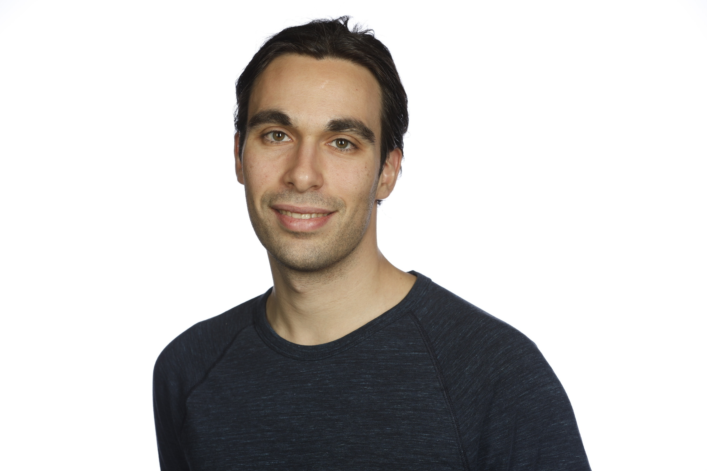

Toyota Technological Institute at Chicago
6045 S Kenwood Ave, Chicago, IL 60637
ntsilivis@ttic.edu
I am a Research Assistant Professor at Toyota Technological Institute at Chicago. I am interested in the foundations of (machine) learning, the science of deep learning, learning theory and computation. My recent research has focused on computational and statistical aspects of learning with Large Language Models. Previously, I received my PhD from New York University, advised by Julia Kempe. During the course of my PhD, I held visiting PhD positions at Harvard University, Toyota Technological Institute at Chicago, Ecole Normale Superieure and FAIR (Meta, NYC). Prior to all that, I obtained my Diploma in Electrical and Computer Engineering from the National Technical University of Athens, advised by Petros Maragos.
See my google scholar profile for an up-to-date version of my publications.
Here is my CV.